What are the differences between 'Relative', 'Absolute' and 'Fixed' positioning?
'Relative', 'Absolute' and 'Fixed' are terms used in CSS to determine in what position on the page elements will be placed.
There are many types of positions that you can use to set an element's position on a webpage e.g. static, relative, absolute, fixed, sticky, initial and inherit.
If you google 'Relative', 'Absolute' and 'Fixed' positioning get something like this:
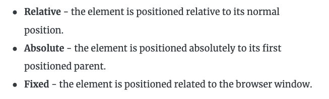
But what does that actually mean and how can we put that into practice?
The first thing to know is that your webpage, in the absense of a position tag, will have a default setting of ‘static’. Which is represented like this in your CSS code: position: static;
Static means it will just follow the standard rules for HTML i.e. read the element's position by the order in which it is coded in the html page.
For the rest of this blog we will use this example of our code and how it displays - three coloured boxes with adorable dogs in them. Nestled in a parent grey box.
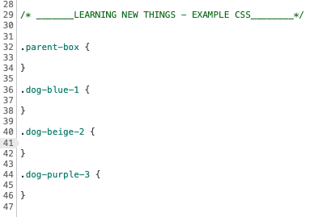
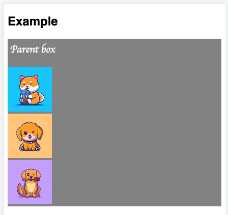
Relative positioning
"The element is positioned relative to its normal position"
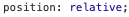
Relative positioning acts a lot like static positioning, however on top of being static it also allows you to set conditions e.g top: 70px; left: 70px;
Think of it like moving a statue in your garden. The statue never changes, but you can move its position on the page based on its static properties.
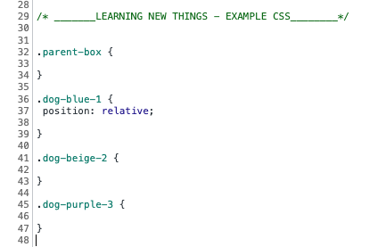
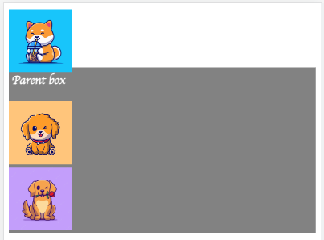
IMPORTANT: One thing to note with relative positioning is that in order to get consistency with your elements; if you apply it to one element, you have to apply it to all elements. Otherwise you will start to see elements overlapping others. Just like the example below.
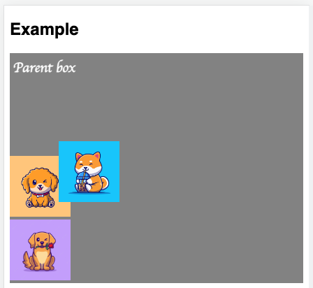
____________
Absolute positioning
"The element is positioned absolutely to its first positioned parent."
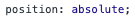
Absolute is a great positioning tool if you want to put something in a specific place on a webpage, but you don't want other elements to move around it.
Absolute also allows you to apply ‘top’ ‘bottom’, ‘left’ and ‘right’ commands.
In the example below. We have applied absolute positioning to the blue dog box, and as you can see the second beige dog box has disappeared! This is because the second beige box renders as if the blue box doesn't even exist at all!
Absolute also allows you to apply ‘top’ ‘bottom’, ‘left’ and ‘right’ commands.
In the example below. We have applied absolute positioning to the blue dog box, and as you can see the second beige dog box has disappeared! This is because the second beige box renders as if the blue box doesn't even exist at all!
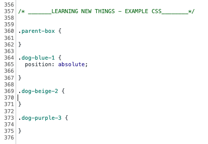
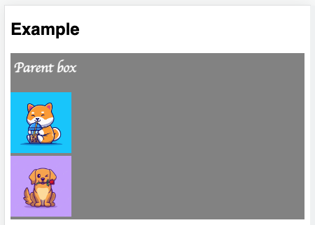
Fortunately, the beige box hasn't actually disappeared; it is just hidden behind the blue box.
To confirm this is the case, we can test this out by resizing the beige box in our other class selectors so you can see it behind the blue box:
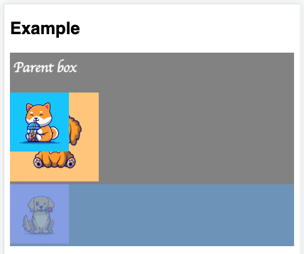
Now for something a little tricky...
Let's say I want my blue box to sit 10px from the top of my parent-box (the grey box). Watch what happens if you apply ‘top’ alongside the position absolute for the blue box:
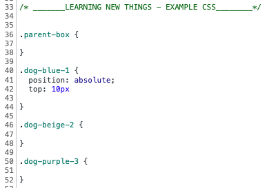
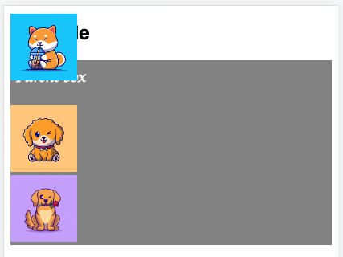
Why did this happen?
The code here is obviously reading this as 10px from the top of the webpage, but why?
This is because currently our ‘.parent-box’ is empty. As we know the default is static, then it cannot have anything positioned absolutely or relatively to it.
This is because currently our ‘.parent-box’ is empty. As we know the default is static, then it cannot have anything positioned absolutely or relatively to it.
How do we fix this?
We need to apply one of the following positional elements to the ‘.parent-box’ class, so that our blue box is able to recognise it and position itself based on that condition. - Relative
- Absolute
- Sticky
- Fixed
--> The most common use case in this situation is to use 'position: relative;'.
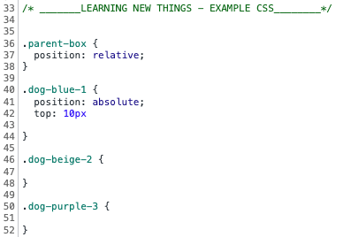

Remembering that for the other coloured boxes to fall in-line you will need to fix a position for each element.
____________
Fixed positioning
"The element is positioned relative to the browser window."
Fixed positioning means fixed to a certain place on a browser window. It ignores all other elements and considers to be its parent container.
Let’s continue our example and change our absolute value in the blue box to ‘fixed’.
Let’s continue our example and change our absolute value in the blue box to ‘fixed’.
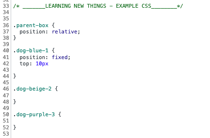
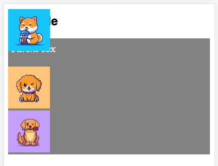
As you can see it has ignored our parent-box position, even though it has a value of relative.
Interestingly...
A ‘fixed’ position element will ALWAYS still be in the same position on the page when you scroll. So if you place a logo at the top left of your page and scroll down to the bottom. That logo will stay positioned at the top left no matter how far you've scrolled down the page.
Importantly, this is not the case for absolute. Absolute will disappear if you scroll enough down the page.